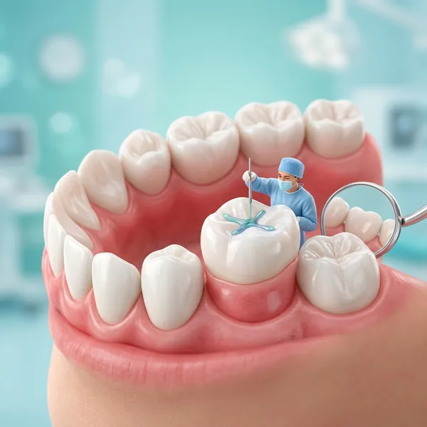

Children's Dentist in Gudivada
Gentle dental care for your little ones. Building healthy smiles from the start with expert, patient, and compassionate care.

Why children need a dentist early
Starting dental care early sets the foundation for a lifetime of healthy smiles. Baby teeth are not temporary—they guide the growth of permanent teeth and help children chew food, speak clearly, and build confidence.
Regular dental visits teach children the importance of oral hygiene, reduce anxiety about dental care, and catch problems early when they're easiest and most affordable to treat. Children who establish good habits young are more likely to maintain healthy teeth throughout their lives.
Our children's services
Preventive Care
Regular checkups, professional cleanings, and fluoride treatments to prevent decay and keep teeth healthy and strong.
Sealants
Protective coatings applied to back teeth to seal grooves and pits, preventing cavity formation on hard-to-clean surfaces.
Gentle Fillings
Pain-free restoration of cavities using tooth-colored materials in a caring, unhurried environment your child will trust.
Space Maintainers
Devices that hold space for permanent teeth when baby teeth are lost early, guiding adult teeth into proper positions.
Your child's first visit
Friendly welcome
We greet your child warmly and take time to know them. A calm, welcoming environment helps ease any nervousness and builds trust from day one.
Gentle examination
We carefully examine your child's teeth and gums, checking for any issues. We explain everything in simple, friendly language.
Cleaning & fluoride
A gentle cleaning removes plaque and tartar. We apply fluoride to strengthen tooth enamel and protect against decay.
Education & tips
We teach your child proper brushing and flossing techniques and give you guidance on diet, habits, and home care.
Treatment plan if needed
If any treatment is needed, we'll explain it clearly to both you and your child, answering all questions before proceeding.
A child-friendly clinic
Patient & gentle team
Our pediatric specialists are trained to work with children. We listen, explain, and never rush. Your child's comfort is our priority.
Kid-friendly environment
Our clinic is designed to feel welcoming and non-threatening. Bright, clean spaces and a calm atmosphere help children feel safe.
Positive experiences
We use positive reinforcement and make dental visits enjoyable. Children who feel supported develop confidence and healthy attitudes toward oral care.
Parent involvement
We welcome your participation in your child's care. You can be present during visits, and we keep you informed every step of the way.
After your child's visit
For fillings or sealants, any numbness from local anaesthetic wears off within a couple of hours — keep an eye on younger children so they don't chew or bite their cheek or lip while it's still numb. Sealants and fillings can be eaten on normally once sensation returns.
Building a simple home routine reinforces what we do at the clinic: brushing twice daily with a pea-sized amount of fluoride toothpaste, flossing once teeth touch each other, and limiting sugary snacks and drinks between meals. Praise and a relaxed attitude at home go a long way toward keeping dental visits stress-free for kids.
We use a gentle, explain-show-do approach with young patients — describing what we're about to do in simple terms and showing them the tools before use — which helps even nervous first-timers feel more in control and less anxious.
When should your child first see a dentist?
The general recommendation is a first dental visit by your child's first birthday, or within six months of their first tooth appearing — much earlier than most parents expect. Early visits are mostly about getting your child comfortable with the clinic environment and catching any issues while they're easy to manage.
After that, a check-up every six months lets us monitor development, apply fluoride or sealants at the right time, and guide healthy habits as adult teeth start coming in. Starting early is one of the best ways to prevent a lifetime of dental anxiety.
Baby teeth matter more than many parents realise — a cavity left untreated in a baby tooth can cause pain, infection, and even affect the healthy development of the adult tooth waiting underneath it.
Parents often ask how to tell if their child is genuinely anxious about a dental visit or just being fussy, and how much to push through versus reschedule. Our general approach is to never force a procedure on a distressed child unless it's a genuine emergency — a rushed, frightening first experience often creates dental anxiety that lasts into adulthood, which defeats the purpose of starting early. Instead, we build up gradually: a first visit might just be a look and a count of teeth, with cleanings and treatment introduced once your child is comfortable in the chair. It takes a little more patience, but it pays off with a child who isn't afraid of the dentist for the rest of their life.